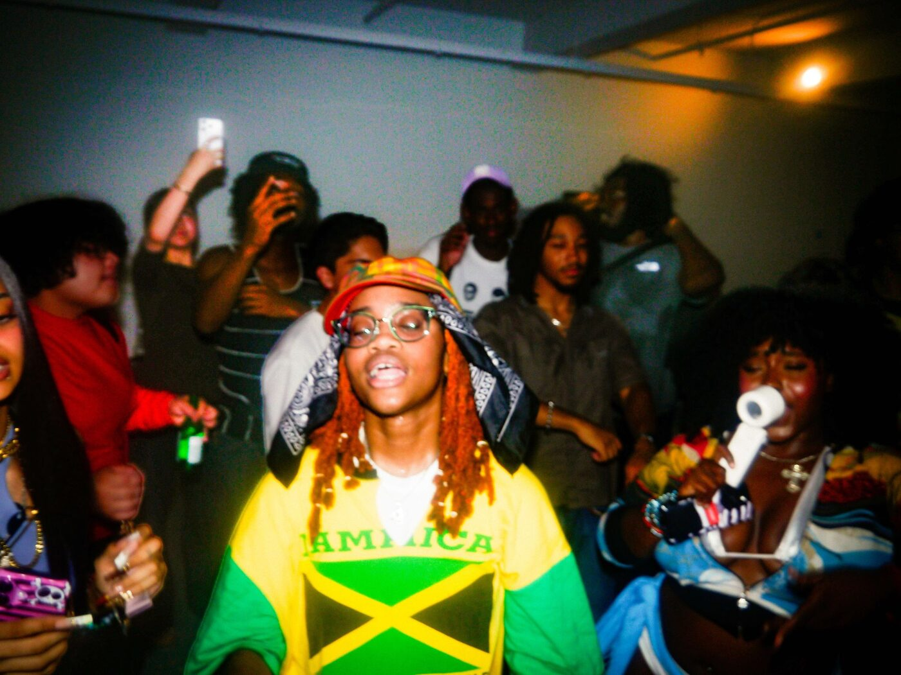
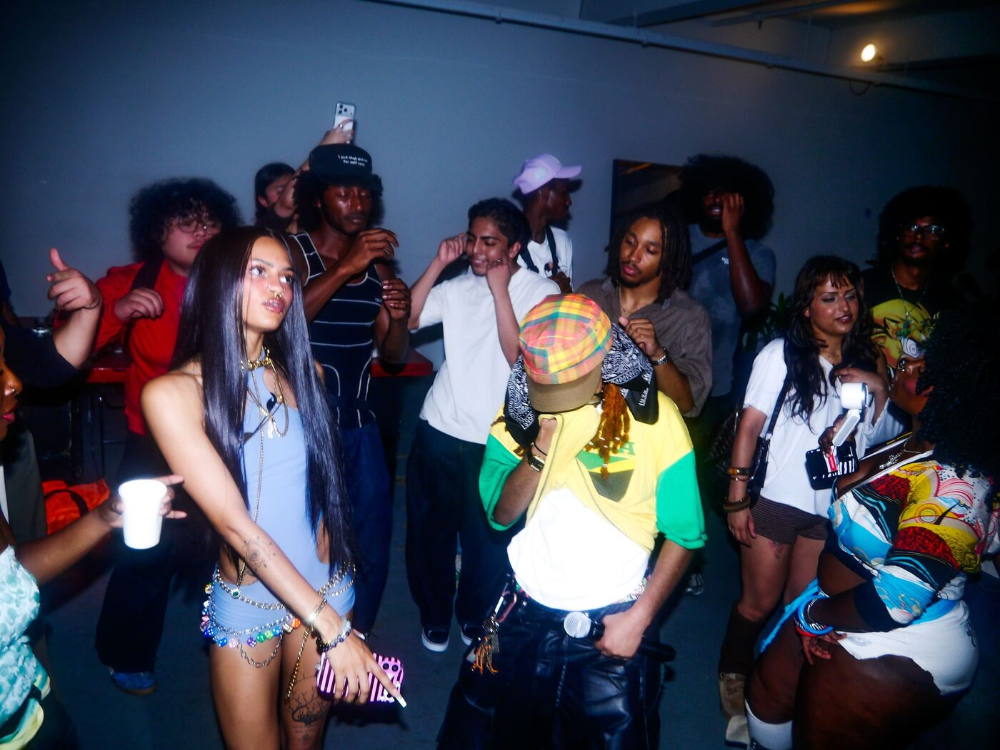
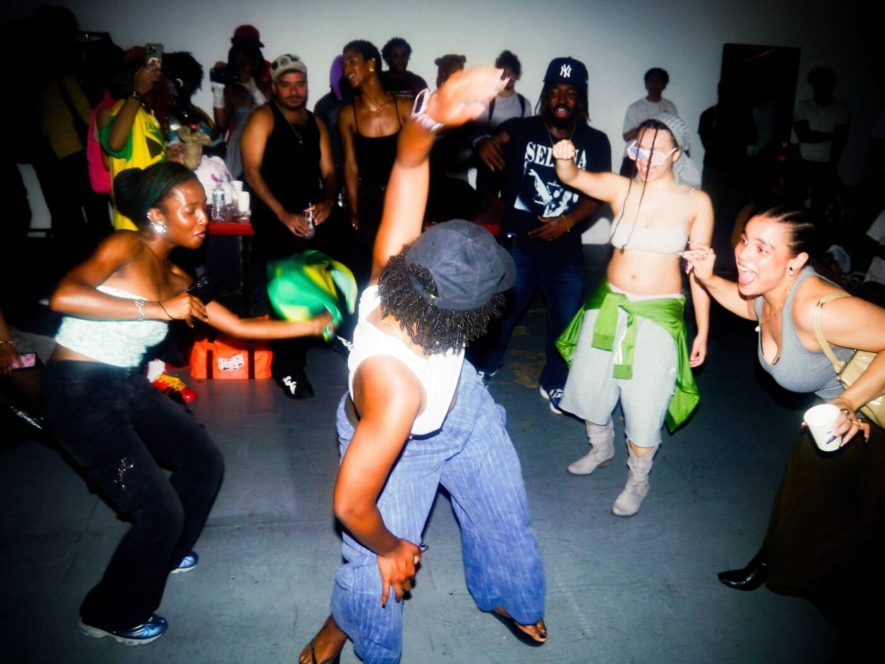
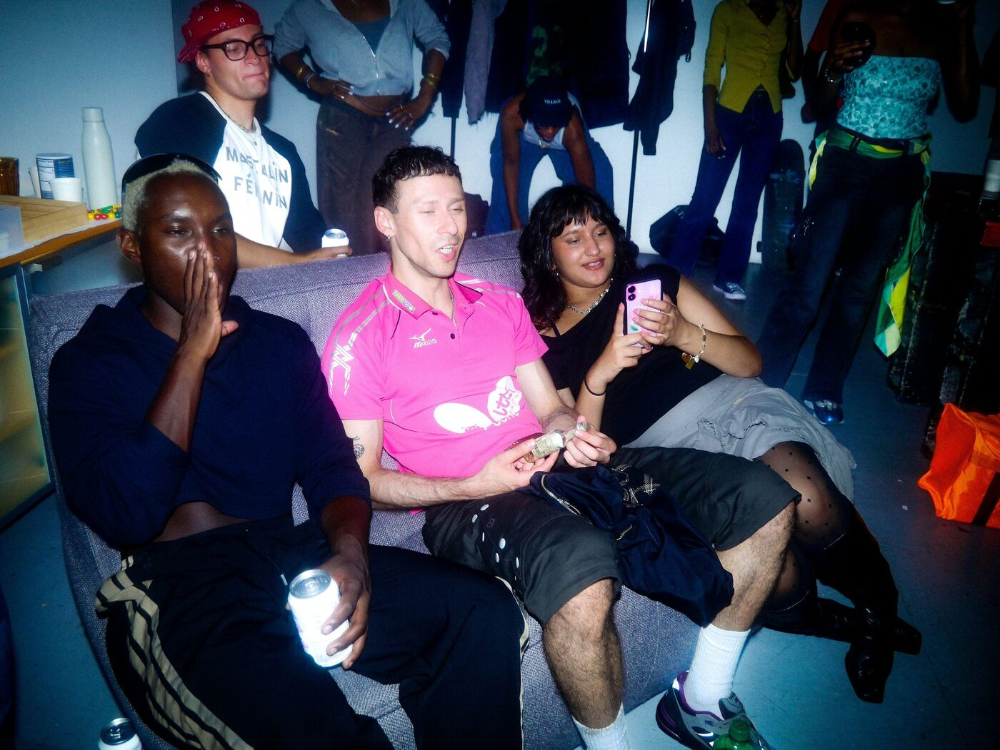

Music by LEE. v2 at Three Times LOUDER

The second solo listening party for LEE., at Three Times LOUDER in New York.
The second of LEE.’s solo listening parties, produced by Painfully Hueman for the release of Boy Toy and Airtight. More in LEE. — Slowing Down to Build an Identity.


